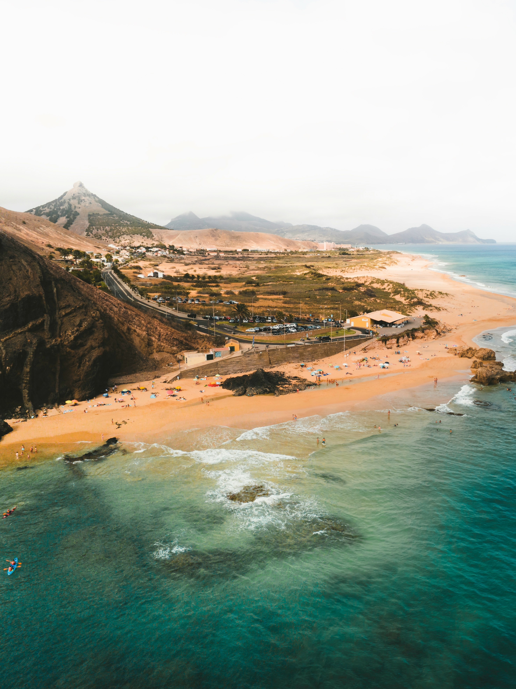
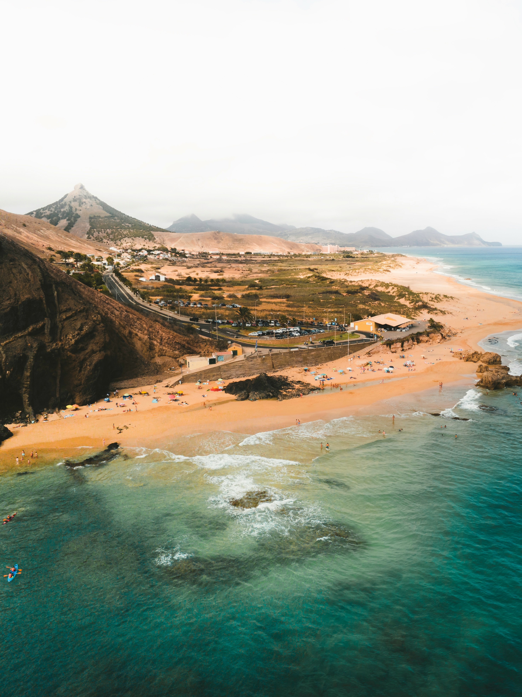

Visit Porto Santo
(Official Promotional Video)
"The Golden Island"
Discover Porto Santo, known as the 'Golden Island' due to its captivating 9-kilometer long sandy beach with a golden hue that sparkles under the Atlantic sun. Beyond its stunning coastlines, Porto Santo offers a rich tapestry of history, tranquil landscapes, and a unique ecosystem. From its volcanic origins to the modern-day haven for relaxation and nature activities, the island is a perfect blend of beauty and tranquility. Whether you're here to unwind on its golden sands, explore scenic hiking trails, or dive into its crystal-clear waters, Porto Santo promises an unforgettable escape.
Explore the Beauty of Porto Santo
Discover the stunning landscapes and serene beaches that make Porto Santo a paradise. Each image captures the unique essence of the island, inviting you to explore its charming sights.Click on any image to zoom in for a closer look.